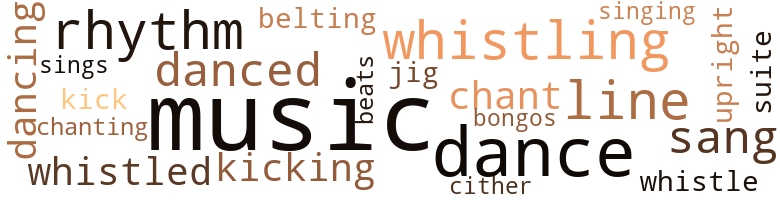
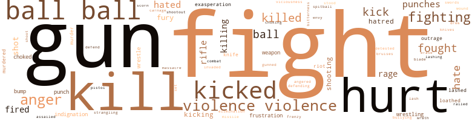
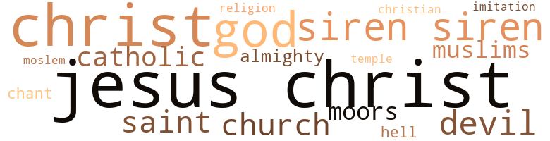

Walk in the City, by Smith, Daniel (1971)
62 music-related terms matched in this text.
Most frequent terms in this topic: music (17); dance (7); line (4); whistling (4); rhythm (4)
belt_out.v.01
Definition: sing loudly and forcefully
| word | sentence |
|---|---|
| belting | Garner froze , heart belting away in his chest , gaping at her naked body . |
bongo.n.01
Definition: a small drum; played with the hands
| word | sentence |
|---|---|
| bongos | The bongos grew more insistent , and the blond began to caress the black girl , white hands slithering over her dark skin as they weaved , nose to nose , staring into each other 's eyes . |
chant.n.01
Definition: a repetitive song in which as many syllables as necessary are assigned to a single tone
| word | sentence |
|---|---|
| chant | The black kids were chant - ing in frenzied unison , " Git ' im , Garna , c ' mon , git ' im ! " |
dance.n.01
Definition: an artistic form of nonverbal communication
| word | sentence |
|---|---|
| dance | For a long , desperate instant , the three of them were locked in a weird , horrible dance , struggling frantically , gasping for breath . |
| dance | He turned to watch the red ash dance along the road and die in the dark behind them . |
| dance | He stood stupefied as a beautiful oriental girl slithered up onto the kitchen table and started to strip while she did a writhing , twisting dance to the music coming from the phonograph . |
dance.v.02
Definition: move in a pattern; usually to musical accompaniment; do or perform a dance
| word | sentence |
|---|---|
| dancing | Others were dancing in the living room . |
dance.v.03
Definition: skip, leap, or move up and down or sideways
| word | sentence |
|---|---|
| danced | At times , lights from passing cars , buildings , and street lights quicksilvered through the car and danced excitingly along her legs , heating his guts and increasing his discomfort . |
| danced | When he danced with a girl , or kissed one , his stomach felt funny , first hot , then cold , up and down - but good . |
| dance | Sometimes he 'd stop and swing one of the girls around and dance with her on the side - walk . |
| dance | " Vicki wants to dance now . |
| dance | Want to dance with Vicki , baby ? " |
| dancing | The girls under the lights , their bodies colored by the spinning chandelier , were dancing now , moving around one another . |
| danced | They came closer and closer together , then danced away , twirling their arms and shaking their breasts . |
| dance | Coupla parties right heah on tha hill , dance down tha social club . |
intonation.n.03
Definition: the act of singing in a monotonous tone
| word | sentence |
|---|---|
| chanting | Onlookers stepped up the chanting and the shouts . |
jig.n.01
Definition: music in three-four time for dancing a jig
| word | sentence |
|---|---|
| jig | He grinned and did a little jig , then jogged back and forth a few times . |
kick.v.04
Definition: kick a leg up
| word | sentence |
|---|---|
| kicking | Within seconds , a mob of maddened black people raged around the car , shrieking obscenities , crying , beating on the car with their fists , kicking the doors . |
| kick | He gon na kick you niggas ' asses an ' send ya all ta Dis-pee . " |
| kicking | He tried to fight back , striking out with his fists and kicking his feet . |
music.n.01
Definition: an artistic form of auditory communication incorporating instrumental or vocal tones in a structured and continuous manner
| word | sentence |
|---|---|
| music | A local disc jockey had been playing a loud , pounding kind of music which threat - ened to make itself heard over the raucous din made by a mob of kids and truck drivers competing for a late afternoon snack . |
| music | " Hey , baby , " he said to the waitress , his voice barely audible against the furious , driving music blaring from the radio and the noise of the people around him , " gim me piece a ' that theah pie . |
| music | Then the music stopped . |
| music | There was a lot of noise : horns honking , people chat - tering and laughing loudly , music from the bars and restaurants . |
| music | There was a great deal of noise , laughter , and loud music . |
| music | The music did n't stop . |
| music | He stood stupefied as a beautiful oriental girl slithered up onto the kitchen table and started to strip while she did a writhing , twisting dance to the music coming from the phonograph . |
| music | They began to clap and chant with the music . |
| music | He heard music and laughter , but the apartment was quieter now . |
| music | They had enclosed each other in their bathrobes and stood on one spot , knotted together , swaying to the quiet music , kissing one another gently . |
| music | She took the glass from him and began to sway gracefully to the music . |
| music | It was very cold - there was a lot of noise , horns honk - ing , people and music - there were women in the doorways - . |
| music | Terry started the car , turned on the radio , and tuned in some music . |
| music | Loud , raucous music burst into the car . |
| music | He was n't really interested in the music , just killing time while the engine warmed . |
| music | Bill heard music coming from the rooms upstairs . |
| music | Upstairs , the music from the juke box was louder and there was less lighting . |
rhythm.n.01
Definition: the basic rhythmic unit in a piece of music
| word | sentence |
|---|---|
| Beats | " Beats that puddle you kids swim in down on Cabot Street , does n't it ? " |
rhythm.n.04
Definition: the arrangement of spoken words alternating stressed and unstressed elements
| word | sentence |
|---|---|
| rhythm | In the silence of the car , they could hear and feel the rhythm outside , other people , other life , cars , trucks , horns honking , lights , the rush of the night air . |
| rhythm | Ella heard him leave and smiled , grinding her body against Harry 's trying to pull him deeper into her , working with the smooth rhythm of his body . |
| rhythm | The pace and rhythm began to get away from them . |
| rhythm | Garner moved in front of her , picking up the slow , bouncing rhythm , and began to work with her . |
sing.v.02
Definition: produce tones with the voice
| word | sentence |
|---|---|
| sang | " Hi , " she sang out . |
| sang | " Well , for pete 's sake , " he sang out when he saw his two visitors . |
| sang | The car 's tires sang along the stones as Terry steadied his pressure on the accelerator . |
| sings | I mean , she just chatters - and sings a little - all the while . |
singing.n.01
Definition: the act of singing vocal music
| word | sentence |
|---|---|
| singing | He held his breath and winced fearfully as a car shot by , its tires singing along the road , tail lights bright and red as it sped out of sight . |
suite.n.01
Definition: a musical composition of several movements only loosely connected
| word | sentence |
|---|---|
| suite | They went up a short flight of stairs and into a well-lit suite of rooms . |
tone.v.01
Definition: utter monotonously and repetitively and rhythmically
| word | sentence |
|---|---|
| chant | They began to clap and chant with the music . |
tune.n.01
Definition: a succession of notes forming a distinctive sequence
| word | sentence |
|---|---|
| line | He was one of a long line of uncles who had followed Uncle Charlie . |
| line | Tom Ryan , a short dark-haired man who taught math , caught Johnny by the ear and shoved him back in line . |
| line | When she looked again , he and Johnny had moved to the front of their line . |
| line | Terry followed a long line of cars up onto a bridge and stopped to pay a toll . |
upright.n.02
Definition: a piano with a vertical sounding board
| word | sentence |
|---|---|
| upright | He sat bolt upright . |
whistle.v.01
Definition: make whistling sounds
| word | sentence |
|---|---|
| whistling | Suddenly , three students , two black , and one white , stood up and pounded their hands together furiously , howling and whistling . |
| whistle | Leroy let out a long , low whistle . |
| whistled | Garner whistled low and hard . |
| whistling | Bill gave Shorty a sharp , hasty look and stared at Garner , whistling softly . |
| whistling | Luther upheld the tradition , defying Mr. Collins with his watery eyes as the switch came whistling through the dark stillness of the room again and again and again and again . |
| whistling | He scowled as Terry started whistling . |
| whistled | Outside , the wind whistled by , dying in the distance , then starting anew from another direction . |
zither.n.01
Definition: a musical stringed instrument with strings stretched over a flat sounding board; it is laid flat and played with a plectrum and with fingers
| word | sentence |
|---|---|
| cither | He was n't happy to be going home that Friday , cither . |
502 violence-related terms matched in this text.
Most frequent terms in this topic: ball (59); fight (41); kill (31); hurt (29); violence (28)
abhor.v.01
Definition: find repugnant
| word | sentence |
|---|---|
| loathed | He recog - nized teachers and books , as enemies , and he loathed them . |
| loathed | However , despite the easy course and sports , he loathed school and hated to give up the good time he was having with Terry . |
aggravation.n.01
Definition: an exasperated feeling of annoyance
| word | sentence |
|---|---|
| exasperation | He finished tying his shoes and then , with a gesture of exasperation , he snatched the book from Leroy 's hand . |
| exasperation | Terry shifted his weight around to look out at Garner , sighing in exasperation . |
anger.n.01
Definition: a strong emotion; a feeling that is oriented toward some real or supposed grievance
| word | sentence |
|---|---|
| anger | " You heard about this thing , huh ? " he blurted , pulling up a chair , his bearded , white face taut with anger . |
| anger | His shots still were n't going in , however , and this increased his frustration and anger . |
| anger | By Wednesday , his anger had grown into a state of constant , un - bearable fury . |
| anger | But this argument stopped him and left him smoldering in anger . |
| anger | Then , when he opened his mouth to hurl his anger and bitterness up at her , all that came out was '' Chana . " |
| anger | His voice rose in anger . |
| anger | Buzz stamped his foot and pounded his fist in his hand in frustrated anger . |
| anger | Leroy 's face was white with anger , tight and grim . |
| anger | " Fuck you , " Bobby hurled back , standing his ground , his face red - dening with anger . |
| anger | Bobby watched them , trying to pretend anger , then , laughing with them , he jumped on them and began to wrestle , pummeling them furiously . |
| anger | He stopped , peeking carefully at the man , expecting him to explode in anger . |
| anger | His expression was a poor attempt at anger as he peeked down at her creamy thighs . |
| anger | Listen , there 's violence in that kid , and anger . |
| anger | Luther 's thick lips quiv - ered in anger . |
| anger | Garner did n't know what he would tell his mother , but when Terry dropped him in front of the house , he was prepared for a storm of anger . |
| anger | Garner smiled slightly then , remembering the time Bill threw him up against the fence in a fit of anger because he had been thrown out of a basketball game for swearing - He towered over the man , scowling , and Bill glared up at him and said evenly , " Boy , do n't you be crazy , now . " |
| anger | He shut his eyes , his anger choking him , nausea welling up at the realization that he would not be a part of this team . |
| anger | Slowly , his anger began to subside . |
| anger | " Listen , nigga , " she said with mock anger , " fuck you , an ' Willi , an ' Sam , an ' Billy Ray , an ' yo ' mothas , an ' yo ' brothas , an ' yo ' sistas , an ' yo ' - " " Okay ! |
| Anger | Anger blazed in Leroy 's face . |
anger.v.02
Definition: become angry
| word | sentence |
|---|---|
| angered | They told him things about himself that frightened him , angered and shamed him . |
attack.v.01
Definition: launch an attack or assault on; begin hostilities or start warfare with
| word | sentence |
|---|---|
| assailed | Sweet musk assailed him as she stood before him , hands on hips , legs wide apart , smiling . |
bruise.n.01
Definition: an injury that doesn't break the skin but results in some discoloration
| word | sentence |
|---|---|
| bruises | It made his cuts and bruises smart . |
bump.n.01
Definition: a lump on the body caused by a blow
| word | sentence |
|---|---|
| bumps | Garner 's skin broke into goose bumps suddenly . |
| bump | - The truck rocked as it slammed over a bump . |
| bump | The truck hit a bump , rocking him and Buzz against the door . |
contemn.v.01
Definition: look down on with disdain
| word | sentence |
|---|---|
| scorn | She thought of Luther and his scorn for the various " uncles " in his life . |
craze.n.02
Definition: state of violent mental agitation
| word | sentence |
|---|---|
| frenzy | In a frenzy he fumbled with the cab door . |
draw.v.23
Definition: pull (a person) apart with four horses tied to his extremities, so as to execute him
| word | sentence |
|---|---|
| drew | He squirmed in his chair as a slow , hot tightening drew up between his legs . |
elimination.n.05
Definition: the murder of a competitor
| word | sentence |
|---|---|
| elimination | His objective in any fight was the elimination of any possible danger to himself . |
envy.n.01
Definition: a feeling of grudging admiration and desire to have something that is possessed by another
| word | sentence |
|---|---|
| envy | They shuddered with envy as Bobby grinned and ran back over to practice . |
erase.v.01
Definition: remove from memory or existence
| word | sentence |
|---|---|
| erase | Will you help me erase the blackboard ? " |
ferociousness.n.01
Definition: the trait of extreme cruelty
| word | sentence |
|---|---|
| viciousness | Black and white fust do n't - " " Andre , " Leroy barked , " think of Laura and your kids when you talk like that , and remember that you 're talking about Whitey collectively , his history , his viciousness , his propaganda and prejudice , not a white person alone , and not the woman who loves you . |
fight.n.02
Definition: the act of fighting; any contest or struggle
| word | sentence |
|---|---|
| fighting | But the rules were strict : no interference , no dirty fighting , and no ganging up on any one boy . |
| Fighting | Fighting boys of his own race was something he did for the sheer joy of proving himself in combat . |
| combat | Fighting boys of his own race was something he did for the sheer joy of proving himself in combat . |
| fighting | He understood , perhaps better than Luther , what fighting was all about . |
fight.n.05
Definition: a boxing or wrestling match
| word | sentence |
|---|---|
| fight | " Aw , do n't let 's fight , " she whispered softly , pressing against him , her pretty , dark face aglow with a smile . |
| fight | The Hawk was the-scourge of the Apaches , feared gun fighter , riding into a renegade Indian camp to challenge the fierce chieftain , Long Knife , to a fight to the death for the black woman he had taken from the wagon train at Hawkins Pass - No . |
| fight | All at once , he had an overwhelming desire to run , or fight , to jump up and down and hit out at everything around him . |
| fight | " What was the fight about ? " |
| fights | Fist fights occurred fre - quently , and occasionally a knife blade gleamed wickedly in dim light . |
| fight | Yes , and there 'd be a fight . |
| fight | He 'd start another fight . |
| fight | Garner followed him down the street , thinking about the fight . |
| fight | " But shit , he ain ' - Well , jes ' don ' choo fuck up an ' lose tha fight , fa ' crissake . |
| fights | Many fights were held there , especially " official " ones , like this . |
| fight | Finally , as if by mutual consent , he and Russo stopped eyeballing one another , pretending to busy themselves with some kind of pre - fight ritual . |
| fight | Garner had never been in a fight like this one . |
| fight | The fight would go on until one of the boys quit . |
| fight | As he watched the fight , Luther felt himself fighting in Garner 's place . |
| fight | The fight was actually over , was n't it ? |
| fight | Russo wanted to stop , but he knew the fight was only beginning . |
| fight | Russo 's mind was no longer on the fight . |
| fight | He was the best she had known since - - Ben was dead now , killed in a knife fight in Newark . |
| fights | She feared losing him , feared also that he might be hurt in one of the fights that she had seen at the club - him right in the middle . |
| fight | One of them would then pick a fight with him while Ellis kept watch . |
| fights | " Nobody fights anybody in here until after he whips me ! |
| fight | His objective in any fight was the elimination of any possible danger to himself . |
| fight | He did not believe in the " fair fight " either . |
fight.v.02
Definition: fight against or resist strongly
| word | sentence |
|---|---|
| fought | He had fought his way further into bed as best he could , but his brothers would n't give ground . |
| fight | " Carol does n't want to fight . |
| fight | An ' ain ' no - buddy gon na do nothin ' ' bout it - not even - me " The tears poured freely then , and he did n't try to fight them . |
| fight | " Did they fight wit ' armies ? " |
| fought | Say niggas even fought Indians an ' - " " He fulla shit . " |
| fight | " Shoot , man , anythin ' ah cain ' read , ah 'm gon na fight wit ' ol' Mr. Webster heah . |
| fought | " Tha Civil War - an ' afta , some a ' them fought tha Indians . " |
| fight | If they wuz gon na fight , why they let white folks make'em inta slaves ? " |
| fight | He thought about the book in his pocket , wondering if he could fight school again . |
| fight | " Gar , please - let 's not fight . |
| fight | Niggas wan na fight alla time , now , man . |
| fight | " Listen , if you people are going to fight , the girls and I are going to clear out of here . |
| fight | Then someone grabbed his arm , and he whirled , frightened , ready to fight , and stared , unbelieving , into Luther 's face . |
| fighting | Wally Burke told me he caught him fighting again just yesterday Beat a kid up pretty bad . |
| fight | " Ah should fight Ellis . " |
| fight | He was very dark , the color of ebony - like Garner - and he was always ready to fight anyone who teased him about it . |
| fighting | Cursing , he stared through the blur of fighting boys at the crowd of white kids who were yelling and screaming , cheering Russo on . |
| fighting | As he watched the fight , Luther felt himself fighting in Garner 's place . |
| fighting | He was hurt ; he was fighting , moving , being hurt again . |
| fight | He knew how to fight , and he knew that he could continue to give Gamer a beating . |
| fight | He thought about how to fight and tried to recall what he should do - " Keep the left high '' - " Circle left " - " Tuck that chin " - " Concentrate " - He watched Garner spit up some blood . |
| fight | Russo began to fight again , feinting , jabbing , boxing cleverly . |
| fighting | Russo was fighting defensively now . |
| fought | They feared and re - spected one another and they never fought again . |
| defend | Garner would defend himself with something like , " Ah know what 's happ ' nin ' , man . " |
| fight | Finally , Buzz said quietly , " Evah ' time we got ta work , you niggas wan na fight . |
| fighting | Garner sat down , still fighting for breath . |
| fight | He tried to fight back , striking out with his fists and kicking his feet . |
| fought | " He 's terrified , " Edna squealed , laughing with Buzz as Garner fought off a slight smile . |
| fight | I had to fight to keep a straight face . " |
| fight | And she could do nothing mother , praying that Harry would n't hit her , that he would n't hurt her , and that he would n't have to fight him . |
| fighting | " Go on , go on , go on , go on , go on - " He writhed and bucked feverishly , fighting for leverage against the desperate grasp of her arms and legs . |
| fought | He fought , jockeying for better position . |
| fight | Luther liked to fight ; it made him feel good , especially when he fought white boys . |
| fought | Luther liked to fight ; it made him feel good , especially when he fought white boys . |
| fighting | White boys were different ; fighting them was a crusade . |
| fighting | He even thought of fighting with him , debating in his young mind the possibility of getting away with it . |
| fought | He fought them , laboring mightily to hold them back . |
| fighting | Again he conjured his vivid scenes where he was fighting his teachers - One by one , he tore into them , smash - ing teeth , cutting eyes , splitting lips open . |
| defending | In his mind , he could see them flying up and down the gleaming hard - wood floor , weaving in and out , changing direction , dribbling , shoot - ing , and defending . |
| fighting | Suddenly , he imagined himself fighting with Coach Connors - Connors was big and extremely powerful , Jjut Garner was too quick for him . |
| fighting | He did n't enjoy fighting , either . |
| fight | When he had to fight , he fought to defend his person or his honor , for defense rather than for pleasure . |
| fought | When he had to fight , he fought to defend his person or his honor , for defense rather than for pleasure . |
| fought | Therefore , he fought desperately and viciously , not to demonstrate any physical prowess or superiority , but to avoid a beating - to survive . |
| fight | " Y' all gon na fight , ya git on outta heah wit ' it ! |
| fighting | Why was he fighting with this man ? |
| fighting | He liked Bill , so what were they fighting about ? |
| fought | He fought against it , but , slowly , the tears trickled out . |
| fought | Bill fought off a slight smile . |
frustration.n.03
Definition: a feeling of annoyance at being hindered or criticized
| word | sentence |
|---|---|
| frustration | The crowd milled about in angry frustration for a few minutes , then they grumbled their way to the exits . |
| frustration | He squeezed his eyes shut , shaking his head in angry , helpless frustration . |
| frustration | His shots still were n't going in , however , and this increased his frustration and anger . |
fury.n.01
Definition: a feeling of intense anger
| word | sentence |
|---|---|
| rage | Some austere , mad architect had created this towering , ugly mass of brick and concrete while in an insane rage . |
| fury | By Wednesday , his anger had grown into a state of constant , un - bearable fury . |
| rage | At times , her presence in his thoughts was so strong that he held his head with both hands , eyes pinched shut , his flat , black face contorted with rage . |
| fury | A black man , in an insane fury , yanked the driver 's door open and was shot in the face by the cop , the bullet smashing up through the man 's jaw and teeth , tearing his head to pieces . |
| rage | He became hysterical , yelling at the top of his voice , his bearded , dirty face contorted with rage , " Lem me go ! |
| rage | He did n't speak , but his guts churned with fierce rage . |
| rage | But Bobby was playing in a rage . |
| fury | He was nearly beside himself with fury now . |
| fury | He continued to watch Mr. Collins with sullen , bitter fury . |
| fury | He wanted her to say it , wanted to hear her voice , even in fury . |
| rage | He had been able to vent some of his rage during the beating . |
| fury | Thass all - ah mean - " " You 're nuts " Matt said with cold fury . |
| rage | Outside , the rage within him was almost unbearable . |
| rage | To be hurt in any way put Leroy in a rage . |
gag.v.06
Definition: cause to retch or choke
| word | sentence |
|---|---|
| choked | " Gawd-a-mighty , " he choked , staring at her in disbelief , his eyes raking over her globular , orange breasts , the brown nipples , the wide flaring hips , her thighs , rounded , sinewy , and statuesque . |
| choked | He laughed harder as Ellis choked on his cigarette . |
| choked | Oh Jesus , Jesus , Jesus - " Awful heat and sweet , thrilling pain ravaged him , carrying his spirit and body soaring out of his control in a heaving rush that choked him , burned him , chilled and shook him with unbearable pleasure as the blessed agony mounted with a force that consumed him , peaking in a blinding surge of sustained , tortured delight . |
| choking | He shut his eyes , his anger choking him , nausea welling up at the realization that he would not be a part of this team . |
gun.n.01
Definition: a weapon that discharges a missile at high velocity (especially from a metal tube or barrel)
| word | sentence |
|---|---|
| gun | He stared at the gun , squeezing his eyes in an attempt to focus on it . |
| gun | He waved the gun casually , then , with a shrug , he slid it out of sight under his coat and grinned at Garner . |
| gun | The Hawk was the-scourge of the Apaches , feared gun fighter , riding into a renegade Indian camp to challenge the fierce chieftain , Long Knife , to a fight to the death for the black woman he had taken from the wagon train at Hawkins Pass - No . |
| guns | He paused momentarily , lowering his voice almost to a whisper , almost pleading , " Ah mean - ya see , man - we ain ' nevah gon na git a fuckin ' thing - till we git rid a ' Whitey , git us some guns - an ' go on out an ' kill evah ' white mutha-fucka we kin - kill evah ' one a ' them gawd - damn - " He stopped talking and sat staring at Garner , clenching and unclenching his huge hands . |
| gun | They wrestled him to the ground , preventing him from drawing his revolver which was finally ripped from its holster by a tall , brown man who then aimed the gun through the opened door at the driver and rapid-fired one shot after the other until it was empty . |
| gun | " Naw " Garner yelled , hitting his brother 's arm as the gun roared . |
| gun | Had a gun . |
| gun | Rounding the corner , Garner and Leroy came face to face with a steel-helmeted , white policeman aiming a submachine gun at them point-blank . |
| gun | He herded them , prodding them roughly with the snout of his gun , into a crowd of glowering black people , men , women , and chil - dren , who were bunched up against a wall , held there by another white cop leveling a machine gun at their bellies . |
| gun | He herded them , prodding them roughly with the snout of his gun , into a crowd of glowering black people , men , women , and chil - dren , who were bunched up against a wall , held there by another white cop leveling a machine gun at their bellies . |
| guns | Garner stood beside Leroy , staring at the guns , then across the street at flames raging around a block of old tenements . |
| guns | The machine guns glinted at them in the light of the fires which rose upward higher and higher . |
| guns | Leroy knocked Garner down on his back , falling beside him as the two machine guns opened up , spitting death in streams of orange and red flame . |
| guns | The machine guns stopped firing , and the other shooting subsided to short , fitful volleys . |
| gun | He saw one of the cops standing over him aiming his machine gun down into his face . |
| gun | He adjusted one of the crates and rested the rifle on it , holding the gun steady , finger on the trigger , ready to fire . |
| gun | No , the night that Buzz - The cellar door was smashed from its hinges , and the dark was instantly engulfed in a blazing holocaust of machine gun fire . |
| guns | They wound their way through the city 's ravaged streets , by gutted buildings , soldiers and policemen cradling rifles and machine guns , who looked on grimly as the procession passed - Yes , Garner thought , there were a lot of funerals that day . |
| guns | Somebody , somewhere , has got to go to work before the soldiers and the police bring in the guns . |
| gun | It was a gun . |
| gun | Luther turned the gun over slowly in his hand . |
| gun | Garner held the gun gingerly . |
| gun | Then Garner , playfully , pointed the gun at him , his finger lightly on the trigger . |
| gun | Garner nodded vigorously , staring at the gun . |
| gun | He slipped it into its chamber , smiling as Garner stared at the gun . |
| gun | Ah got ta gun ! |
| gun | Ah got ta gun heah ! |
| Gun | Gun ? |
| gun | He charged at the man , smashing the gun into his face . |
| gun | Luther flailed him viciously about the side of the head and face with the gun . |
| gun | Garner pretended to ignore the conversation and went on staring at the T.V. His throat felt thick ; he thought of Buzz and Luther and remembered the newscast - " One policeman has been killed and another seriously wounded in a gun battle with hoodlums . |
| guns | All at once white people were dying all around him as he struck out in all directions with varied and sundry devices for inflict - ing wounds : knives , guns , swords , stones , and fists . |
| gun | Then the cat gets evil and says , ' If you had a gun would you kill all the white people ? ' |
| gun | " He says , ' I do n't know about all that , baby , but if I got a gun right now , I just might kill you ! ' |
gun.v.01
Definition: shoot with a gun
| word | sentence |
|---|---|
| gunned | Terry gunned the engine , and the Buick lurched away . |
gunfight.n.01
Definition: a fight involving shooting small arms with the intent to kill or frighten
| word | sentence |
|---|---|
| shootout | Harry got up and fiddled with the television set , switching into the middle of a wild-west shootout . |
hate.n.01
Definition: the emotion of intense dislike; a feeling of dislike so strong that it demands action
| word | sentence |
|---|---|
| hatred | Despite his shame and his hatred of whores , Leroy often wondered about his mother . |
| hatred | A look of pure terror was on one white boy 's face , and hatred on the face of another . |
| hatred | Yes , and black teachers - we do n't want your white teachers filling black kids ' heads with hatred for themselves , either - and , above all , Black History , white folks , Black Geography , Black Literature , Black Art , Black Music , Black Sculpture , and with it all , black - black - black pride . " |
| hate | " Ah hate fuckin ' school . " |
| hatred | His hatred was blind and uncompromising . |
| hate | " Leroy sho ' hate white folks . " |
| hatred | They both hated white people ; if anything , Leroy 's hatred of whites was even more intense than Luther 's . |
hate.v.01
Definition: dislike intensely; feel antipathy or aversion towards
| word | sentence |
|---|---|
| hate | It is an act of violence to teach that child to hate himself through your language , your books , your television , movies , and folklore - this is violence , white folks , white , racist violence . |
| hated | He hated rats . |
| hate | Boy , did I hate that black bastard . " |
| hates | " Burke 's a mean som ' bitch , baby - hates niggas . " |
| hated | He hated assemblies , especially long ones . |
| hate | You hate my guts , do n't you ? " |
| hate | He did n't understand everything Shorty told him , but after their little talk , Garner did n't fear and hate him anymore . |
| hated | He had always been an indifferent student , but now he hated school . |
| hated | So he hated reading , too . |
| hated | And school books he hated most of all . |
| hate | " Collins hate niggas , man . |
| hated | He hated Harry . |
| hate | And , Bill , he 's got this great gift , that speed - the hardest thing to find in an athlete - and size , and - I 'd really hate to let this kid get away . |
| hates | Yes , he thought , the nigger bastard hates me , but there 's nothing he can do about it , and he has no place to hide . |
| hated | He hated the man . |
| detested | Luther was certain that he detested blacks as much as Collins did . |
| hated | However , despite the easy course and sports , he loathed school and hated to give up the good time he was having with Terry . |
| hated | They both hated white people ; if anything , Leroy 's hatred of whites was even more intense than Luther 's . |
| hate | He had learned to hate the color of his skin , his " whiteness , " when he had overheard his uncle , and his aunt , discussing his mother and father . |
hurt.v.04
Definition: cause damage or affect negatively
| word | sentence |
|---|---|
| hurt | " Maybe you just do n't like me , " she suggested , pretending to be hurt . |
| hurt | He was hurt ; he was fighting , moving , being hurt again . |
| hurt | She feared losing him , feared also that he might be hurt in one of the fights that she had seen at the club - him right in the middle . |
| hurt | Ma stomick hurt bad ! " |
| hurt | His belly - ache hurt so much that it began to frighten him a little . |
| hurt | To be hurt in any way put Leroy in a rage . |
indignation.n.01
Definition: a feeling of righteous anger
| word | sentence |
|---|---|
| indignation | He 's my brother " Billy 's thin face clouded with indignation , and he yelped , " I can introduce myself , girl ! " |
| outrage | He glared furiously at Garner , howling his outrage . |
| indignation | " Sheet , man , " Garner whined in indignation as he ran quickly over to his brother , " you know ah don ' fuck ' roun ' ! |
| indignation | Her voice was shrill with indignation , " Lem me go ! |
| outrage | As he bent to retrieve his jacket , she swung at him in furious outrage , missed and walloped Harry in the mouth , carrying both of them backward over the chair and crashing to the floor . |
injury.n.01
Definition: any physical damage to the body caused by violence or accident or fracture etc.
| word | sentence |
|---|---|
| hurt | Grating , aching hurt tore into him from all directions . |
| hurt | Garner 's sav - age , angry punching was beginning to reach his face more and more often , and he was getting hurt . |
| hurt | His mind was shrouded with con - fusion , fright , and hurt . |
| hurt | His belly hurt and he was beginning to sweat . |
| hurt | His stomach hurt again . |
| hurt | Ah mean , Al is - name 's Elvira - one a ' them bitches so fine it kinda hurt ta look at ' er . |
| hurt | " Don ' choo hurt ' er ! |
| hurt | Jesus Christ , boy , I 'm the one getting hurt ! |
| hurt | Fuckin ' head hurt . " |
invade.v.01
Definition: march aggressively into another's territory by military force for the purposes of conquest and occupation
| word | sentence |
|---|---|
| invaded | Well , they were Arabs , invaded and con - quered Spain . |
kick.v.04
Definition: kick a leg up
| word | sentence |
|---|---|
| kicking | Within seconds , a mob of maddened black people raged around the car , shrieking obscenities , crying , beating on the car with their fists , kicking the doors . |
| kick | He gon na kick you niggas ' asses an ' send ya all ta Dis-pee . " |
| kicking | He tried to fight back , striking out with his fists and kicking his feet . |
kick_back.v.02
Definition: spring back, as from a forceful thrust
| word | sentence |
|---|---|
| kicked | Georgie kicked him in the belly and drew his foot back to do it again , but his boss 's voice checked him . |
| kicked | Nigga could git ' is ass kicked ovah bitch like this . " |
| kicked | The boy kicked his legs and thrashed his arms about uselessly . |
| kicked | He kicked the base of the pole Terry was leaning on , chipping some ice loose . |
| kicked | She kicked the door shut , still cursing . |
| Kick | Kick ' is fuckin ' ass ! |
| kicked | Sides , top man got ta cool it ; ya cain ' make no bread if ya kicked outta school - Murph wuz a marine , baby . " |
| kick | Use ta kick evah ' buddy 's ass , man . " |
| kicked | " Bullshit ; he ai n't never kicked Mike 's ass ! |
| kicked | " Lutha coulda kicked his ass . " |
| kick | " We 'd hafta kick his ass , " Bobby laughed . |
| kicked | He kicked some toys aside and dropped to his knees to look under the bed . |
| kicked | " Ah tol ' im ah shoulda hit ' im in his mouth first an ' then kicked Reardon 's ass ! |
| kicked | Yo ' aunt done kicked yo ' ass a whole lotta times fa ' sneakin ' out tha house . " |
| kicked | Ellis kicked idly at a brown leaf which floated along the ground . |
| kick | Yo ' ol' man gon na kick yo ' ass , Bobby . " |
| kicked | Bobby angrily kicked at a pebble and jammed his hands in his pockets . |
| kicked | " I du n no - get my teeth kicked in , I guess . |
| kicked | Murph kicked him outta school . " |
| kicks | It 's Ma kicks ma ass . |
| kicked | Had he not kicked up a fuss , he might have enjoyed the relative privacy of reading from his desk in the middle of the room . |
| kicked | The boy he had been stalking dropped his papers and kicked him in the belly . |
| kicking | Someone he could n't see kept kicking his legs out from under him . |
| kicks | The kicks and punches became fewer . |
| kicked | Then he wriggled and twisted and lashed out with his fists and kicked his feet . |
| kicking | He tried to keep kicking and punch - ing , but he was tired , weak with pain . |
| kicks | He could feel his body being shoved and pushed as the kicks and punches buffeted him from side to side . |
| kicks | She fa ' kicks fa ' me same 's ah 'm fa ' kicks fa ' her . |
| kicks | She fa ' kicks fa ' me same 's ah 'm fa ' kicks fa ' her . |
| kicked | He kicked at some loose snow and gave her a positively malevolent look . |
| kicked | He kicked the door open as the lights began to move again . |
| kicked | " Sheet , we kicked they asses . " |
| kicking | Garner watched Shirley 's bare legs kicking in the air as her skirt rode up on her thighs . |
| kick | Ah 'll kick ya fuckin ' ass fa ' that , ya som ' bitch ! " |
| kick | " Try it , " he snarled , " and I 'll kick ya teeth in . " |
| kicked | Garner kicked at some ice and stomped on his way , pulling his sweater down under his jacket . |
| kicked | Garner kicked a piece of ice and jammed his hands into his pockets . |
| kicked | He cursed and kicked some snow out of an icy rut . |
kill.v.10
Definition: cause the death of, without intention
| word | sentence |
|---|---|
| killed | Them fuckin ' bastids killed Terry ! " |
| killed | Why , he 'd be killed ! |
| kill | Gawddamn - ah wish ah could cut ' cha balls off - an ' ya tits , an ' ya hearts , an ' - ah wish ah could kill ya all , an ' - " Abruptly , he thought of Carol 's pretty , dark face , and Jackie . |
| kill | We 'll kill a whole bunch of you honkies , and your kids , and your mothers , and - " A collective gasp wriggled through the room . |
| kill | If a white man puts his hands on a black man , intending violence to his person , the black man should kill him ! |
| Kill | Kill him , do n't hit him ! |
| kill | Just kill the bastard ! |
| kill | " Great God , " Bill laughed , " I 'm going to kill me a blind fool here any minute . " |
| killed | - A black man killed seven Apaches during a raid , a young brave , sired of a captured black woman and an Indian chief , led the massacre of eighty-seven whites , two black men riding as hired guns in a range war . |
| kill | " Ah 'll kill tha fuckin ' bitch , " was a muted scream in his head . |
| kill | He paused momentarily , lowering his voice almost to a whisper , almost pleading , " Ah mean - ya see , man - we ain ' nevah gon na git a fuckin ' thing - till we git rid a ' Whitey , git us some guns - an ' go on out an ' kill evah ' white mutha-fucka we kin - kill evah ' one a ' them gawd - damn - " He stopped talking and sat staring at Garner , clenching and unclenching his huge hands . |
| kill | He paused momentarily , lowering his voice almost to a whisper , almost pleading , " Ah mean - ya see , man - we ain ' nevah gon na git a fuckin ' thing - till we git rid a ' Whitey , git us some guns - an ' go on out an ' kill evah ' white mutha-fucka we kin - kill evah ' one a ' them gawd - damn - " He stopped talking and sat staring at Garner , clenching and unclenching his huge hands . |
| kill | He can continue to exploit us , kill us - anything he wants - turn us into little black puppets , Uncle Toms who - " Garner sat back in his chair and lit a cigarette , his eyes darting from one man to the other . |
| killing | The cop fired again and again , wounding two boys and killing an old man while the other officer , a black man , was hauled from the vehicle by three men screaming curses and ignoring his flailing night - stick . |
| killing | One of the bullets hit a black woman be - tween the eyes , killing her instantly . |
| kill | We gon na kill evah ' thin ' white we can find ! |
| killed | Then the car exploded with a thundering , ear - splitting boom , and the man nearest the car was killed , his body ripped into flaming bits . |
| kill | He remembered his cell - it did n't matter how many ; he 'd kill them all . |
| killed | Luther saw an explosion of glaring , fiery light , felt the crates give way in front of him , blasted to splinters , the rifle tom from his hands , felt the red-hot blows of the slugs that knocked him backward into the wall , then felt nothing , was killed , his corpse pinned to the wall , bullets still ripping into it , chewing it to bloody scraps . |
| killed | Eighty-four people just got killed , for God 's sake ! |
| kill | He thought of waking his brothers , but knew it would be difficult to corner and kill a rat in this dim light . |
| killed | Me an ' Lutha jes ' killed my last one . " |
| kill | Did ya kill ' im ? " |
| killed | " Ah jes ' hope we ain ' killed tha fuckin ' man , thass all . " |
| kill | " Well , ah mean they wan na kill all tha white folks ! |
| kill | " ' Sides , Muslims don ' wan na kill nobuddy . |
| killed | He was the best she had known since - - Ben was dead now , killed in a knife fight in Newark . |
| Kill | Another boy screamed , " Kill the prick ! |
| kill | " Goddamn , you 'll kill me ! " |
| killed | Jesus Christ - tha fuckin ' bastids done killed Buzz . " |
| killed | Luther would have killed him had he known how to do it without paying the consequences . |
| killed | Garner pretended to ignore the conversation and went on staring at the T.V. His throat felt thick ; he thought of Buzz and Luther and remembered the newscast - " One policeman has been killed and another seriously wounded in a gun battle with hoodlums . |
| kill | ' They gon na kill ' im , ' she kept saying . " |
| kill | " Lutha kill ya ! |
| kill | He kill ya , if he heah ya ! " |
| killing | Then they were alive again , mothers , brothers , sisters , wives , and children , and he was killing them all over again . |
| killing | Their noses were bleeding , and they begged , but he kept killing them . |
| killed | Bill , he thought , would have killed him . |
| killing | Then he began to imagine that he was crippling them instead of killing them so that their agony was not interrupted by death - School had to be discontinued now because so many teachers were injured , or afraid to come to work . |
| killing | He was n't really interested in the music , just killing time while the engine warmed . |
| kill | Ah could kill ya , boy . |
| kill | Ah could kill ya , thass what " Her voice broke with sobbing , " Ah could - jes ' - jes ' kill ya , " and she threw her arms around his waist and hugged and squeezed as she wept against his chest . |
| kill | Shit , kill a few ! " |
| kill | ' If a honky puts his hands on you , ' he said , ' kill him ! |
| kill | Just kill the fool ! ' |
| kill | Then the cat gets evil and says , ' If you had a gun would you kill all the white people ? ' |
| kill | " He says , ' I do n't know about all that , baby , but if I got a gun right now , I just might kill you ! ' |
| kill | " Sheet , too bad that nigga did n't kill the mutha-fucka . " |
killing.n.02
Definition: the act of terminating a life
| word | sentence |
|---|---|
| killing | The killing was executed in typical gangland style : each victim was gagged , hands tied behind his back , and shot once through the head - " There was more , but Bill did n't read any further . |
| killing | No , it was a contract killing . |
| kill | No , sir - you know , the soldiers have been lucky , so far , because we have n't really set out to start kill - ing you people - and them - yet . |
| kill | Les ' kill all these honkies ! " |
| kill | The three boys prowled the streets at night like beasts of prey on the hunt , looking for an easy kill . |
| kill | Ah could kill ya , thass what " Her voice broke with sobbing , " Ah could - jes ' - jes ' kill ya , " and she threw her arms around his waist and hugged and squeezed as she wept against his chest . |
knife.n.02
Definition: a weapon with a handle and blade with a sharp point
| word | sentence |
|---|---|
| knife | Fist fights occurred fre - quently , and occasionally a knife blade gleamed wickedly in dim light . |
| knife | " Git a knife an ' a glass frum tha sink . " |
| knives | All at once white people were dying all around him as he struck out in all directions with varied and sundry devices for inflict - ing wounds : knives , guns , swords , stones , and fists . |
murder.n.01
Definition: unlawful premeditated killing of a human being by a human being
| word | sentence |
|---|---|
| murder | I tell you , this is murder . " |
| murder | She wanted to sit on his chest , pin him with her knees and slap him until he woke up ; God , she wanted to threaten him with murder ! |
murder.v.01
Definition: kill intentionally and with premeditation
| word | sentence |
|---|---|
| murdered | Man , they just murdered his brother , did n't they ? |
| murdered | I murdered my exams , baby . |
musket_ball.n.01
Definition: a solid projectile that is shot by a musket
| word | sentence |
|---|---|
| balls | Gawddamn - ah wish ah could cut ' cha balls off - an ' ya tits , an ' ya hearts , an ' - ah wish ah could kill ya all , an ' - " Abruptly , he thought of Carol 's pretty , dark face , and Jackie . |
| ball | " How would you like to play ball again ? " |
| ball | The point is this : if you 're interested in this thing , I can start the ball rolling and talk to some people . |
| ball | The tall , black boy threw him a ball . |
| ball | He hogged the ball ; when he could n't drive , he shot long jumpers from the top of the key or deep in the corner . |
| ball | As soon as he got the ball , Garner stepped down and fired a twenty-footer . |
| ball | " Hey , man , c ' mon , pass the ball , will ya ? " the tall , black boy said . |
| ball | C'mon , move the ball . " |
| ball | His legs were tired , and when he stepped down to go up for a shot , he was n't getting enough height to keep him in the air long enough to aim the ball properly . |
| ball | Garner became so tired , he dragged up and down the court , only running when he had the ball . |
| ball | One afternoon in the gym , Mr. Murphy threw a ball out to Bobby and Garner . |
| ball | Bobby grabbed the ball and ran toward the basket , dribbling once , and laid the ball up and into the basket . |
| ball | Bobby grabbed the ball and ran toward the basket , dribbling once , and laid the ball up and into the basket . |
| ball | Garner followed on the run , picking the ball up under the net before it hit the floor . |
| ball | Bobby shook his head and flipped the ball toward him . |
| ball | He watched Garner hesitate , then heave the ball angrily at Bobby . |
| ball | " You guys interested in playing some ball ? " |
| ball | Murph asked as he took the ball from Bobby . |
| ball | They were back the next day and again asked for a ball . |
| ball | Jes ' gon na - " " We just wan na use a ball , Mr. Murphy . " |
| ball | Kin we use a ball a ' not ? " |
| ball | The ball rimmed the hoop and bounded to the side . |
| ball | Ellis came over , dribbling the ball . |
| ball | " Track starts Monday , " he said casually and began to move the ball in a circle around his body and behind his back , faster and faster . |
| ball | Ellis caught his eyes momentarily and shrugged , flipping the ball into the air and catching it easily , first on one hand and then on the other . |
| ball | We could have ourse ' ves a ball . " |
| ball | Fa ' crissake , he been playin ' ball all winta . " |
| balls | Christ - they 'd drag me home by my balls . |
| balls | He came out of his office and picked up six eight-inch playground balls and walked out to the center of the gym floor . |
| balls | Huge , black arms bulged from the sleeves of his gray T-shirt as his muscles flexed to cradle the light , but awkward , load of balls . |
| balls | He placed the balls on the center stripe , spacing them evenly , about three feet apart . |
| balls | The object of it all was to hit opposing players with the balls without hitting anything before hitting an opponent , and without crossing the center stripe . |
| ball | Each player hit was out of the game unless he caught the ball on the fly , in which case the person who threw it was out . |
| ball | Each time he threw a ball , he let it go with all of his considerable strength . |
| ball | " Got ta be hard ta play ball , Hawk . " |
| balls | And it continued that way ; Shorty would n't let up : " Run on the balls of your feet , Hawkins . |
| ball | All he seemed to hear from him was criti - cism : " Move the ball , Hawkins ! " |
| ball | Why did n't you give him the ball ? " |
| ball | " Where 'd you learn to play ball ? " he asked gruffly . |
| ball | Re - bounding - you ca n't score without the ball , can you ? |
| ball | That was it ; Shorty liked him and wanted him to play good ball . |
| balls | " Yeah , Pat 's good people - got a lot a ' balls . |
| ball | " Brother Halloran says the coach wants me to play Legion ball this summer . " |
| ball | There was a volleyball net strung across one half of it , and a swarm of small , black boys were wrestling for control of a ball underneath . |
| ball | " Garner here wants to play a little ball this summer , " Shorty said as he and Garner seated themselves in front of the desk . |
| ball | Senior ball is pretty fast , you know . " |
| ball | He took a place in line behind some of the other boys and watched a lithe , orange-colored boy take a pass and drive under the basket and lay the ball up on the backboard . |
| ball | Ellis waited as Garner ran forward , taking a pass and laying the ball on the rim and turning to watch it drop through the chain net . |
| ball | Garner ran off to rebound the ball and pass it off . |
| ball | " Say , boy , you quit playing ball ? |
| ball | Hey , boy , I said - how come you 're not playing any more ball ? " |
| ball | Man frum yo ' ball team heah fa ' ya . |
| ball | " Do n't you want to play ball ? " |
| ball | And boy , sports - foot - ball is good for what ails you . |
| ball | Every time you carried the ball , I thought she was going to have a fit . |
| ball | " Who lettered the ball for you ? " |
| ball | Harry 's brow knit in annoyance , and he flipped the ball back onto the bed . |
| ball | That way ya be able ta work alla time , stead a ' jes ' part a ' tha time , ' spesh ' ly if ya quit alia that ball playin ' . " |
| ball | Suddenly , Garner imagined that he was playing ball - He was on the shiny floor of the City Gardens before a packed house of screaming fans ; he was wearing white sneakers and moving with great speed , flashing in and out of swarms of opposing players with amazing dexterity , dribbling behind his back and between his legs and then scoring . |
| ball | " Ah thought ' choo cats wuz gon na play some ball , man . |
| ball | " Christ , the only other ball player they had was Bobby . " |
| ball | The ball swept cleanly through the net . |
| ball | " Wan na play ball , " he rephrased cau - tiously . |
| ball | " Jes ' wan na play ball , thass all , man . " |
| balls | He could hear balls bouncing , chatter , running footsteps , and squealing rubber as the players stopped and cut . |
| ball | Then one of them picked up a ball and yelled , " Let 's work . " |
| ball | Then he remembered playing basket - ball and football for Bill Chamberlain . |
| ball | Ah ain ' playin ' ball fa ' you no mo ' , man . " |
open_fire.v.01
Definition: start firing a weapon
| word | sentence |
|---|---|
| fired | He dribbled toward the basket then and stopped short ; stepping down hard and driving his body high off the court , he fired a long jump shot which banked off the rusty , steel backboard and whipped through the net . |
| fired | As soon as he got the ball , Garner stepped down and fired a twenty-footer . |
| fired | The cop fired again and again , wounding two boys and killing an old man while the other officer , a black man , was hauled from the vehicle by three men screaming curses and ignoring his flailing night - stick . |
| fired | Gamer wound up and fired again , banging him viciously on the nose . |
| fired | One of the police officers squatted under the trailer and fired two quick shots . |
| fired | He fired three times ; the officer under the trailer fell as his companion dove toward the ground , firing several times on the way down . |
| fired | Patrolmen John E. Burke and Francis J. Reilly were fired upon when they attempted to detain thieves who had broken into a warehouse off Atlantic Avenue . |
| fired | - " The man he fired at may have been a Negro . " |
pain.v.02
Definition: cause emotional anguish or make miserable
| word | sentence |
|---|---|
| hurt | You 're going to hurt my feelings , baby . |
| hurt | " You goddamn fools - well - okay , get the people who are n't hurt the hell out of here . |
| hurt | Yes , she thought , he had been hurt . |
| hurt | How many times had she hurt her children like this ? |
| hurt | Russo hurt him then . |
| hurt | Although neither boy could knock the other off his feet , they could punish and hurt . |
| hurt | He was hurt ; he was fighting , moving , being hurt again . |
| hurt | He could feel them land but they did n't hurt as much . |
| hurt | He felt so good that it almost hurt . |
| hurt | A horrible fear seized him as he realized he was badly hurt . |
| hurt | And she could do nothing mother , praying that Harry would n't hit her , that he would n't hurt her , and that he would n't have to fight him . |
| hurt | He stared at her , forcing the muscles in his neck and face into a fierce , gnarled , straining contraction , grimacing until his eyeballs bulged and hurt as though something was tearing them from their sockets . |
| hurt | He wanted to hurt them ; he enjoyed see - ing them bleed . |
| hurt | White man wo n't listen if you do n't hurt him . |
pistol.n.01
Definition: a firearm that is held and fired with one hand
| word | sentence |
|---|---|
| pistol | " Watch this , baby , " Luther said calmly , breaking the pistol open to show Garner the bullets . |
projectile.n.01
Definition: a weapon that is forcibly thrown or projected at a targets but is not self-propelled
| word | sentence |
|---|---|
| missile | After the gooey missile splattered against the blackboard , landing just inches from his head , he had turned to see Luther . |
punch.n.01
Definition: (boxing) a blow with the fist
| word | sentence |
|---|---|
| punch | Gamer tried to keep from lunging so much , maneuvering , trying to land a solid punch . |
| punch | Another punch caught him flush in the mouth . |
| punches | Russo threw his punches harder now , straight , bringing them right from the shoulder . |
| punches | One of his wild punches caught Russo high on the cheek . |
| punches | Garner could see the punches coming too . |
| punches | Russo 's punches did n't seem to be coming as often or as hard . |
| punches | He simply wound up and threw hay - makers , taking two or three punches to land one of his own . |
| punches | He did n't care where he got hit himself or where his own punches landed . |
| punches | Garner set his feet , throwing his punches straighter and harder . |
| punches | Russo tried catching some of the blows on his arms and shoulders , but they hurt too much , and he could n't get set to get off any hard punches of his own . |
| punch | Luther had one last thought of flying at the man , maybe getting a thumb in his eye , or at least hitting him with one good punch - maybe on the nose . |
| punches | He whirled around the man , flicking punches at him , rending the flesh about his eyes and mouth while the other coach cowered in a far corner of the gym , too terrified to move . |
resentment.n.01
Definition: a feeling of deep and bitter anger and ill-will
| word | sentence |
|---|---|
| bitterness | Then , when he opened his mouth to hurl his anger and bitterness up at her , all that came out was '' Chana . " |
resist.v.04
Definition: withstand the force of something
| word | sentence |
|---|---|
| stood | Garner stood firm . |
rifle.n.01
Definition: a shoulder firearm with a long barrel and a rifled bore
| word | sentence |
|---|---|
| rifle | Luther pulled a long , bolt action rifle from a brown cloth sheath and held it out for Garner to see . |
| rifle | Luther swung the rifle up , chambering a round , and took aim . |
| rifle | Luther swung the rifle butt around , crashing it against Garner 's head , splitting his cheek open and knock - ing him unconscious . |
| rifle | Another shot cut through the night as firemen ran for the safety of doorways and alleys or flattened out on the ground , and a policeman , running for cover , pitched forward onto his face , his rifle clattering away from him in the street . |
| rifle | He was hiding in the dark , smoke-filled cellar of a burning tenement , feverishly reloading his rifle . |
| rifle | He adjusted one of the crates and rested the rifle on it , holding the gun steady , finger on the trigger , ready to fire . |
| rifle | Luther saw an explosion of glaring , fiery light , felt the crates give way in front of him , blasted to splinters , the rifle tom from his hands , felt the red-hot blows of the slugs that knocked him backward into the wall , then felt nothing , was killed , his corpse pinned to the wall , bullets still ripping into it , chewing it to bloody scraps . |
| rifles | They wound their way through the city 's ravaged streets , by gutted buildings , soldiers and policemen cradling rifles and machine guns , who looked on grimly as the procession passed - Yes , Garner thought , there were a lot of funerals that day . |
riot.n.01
Definition: a public act of violence by an unruly mob
| word | sentence |
|---|---|
| riot | We need another riot , that 's what we need - we 're goin ' to get one , too , I 'm tellin ' you . |
| riot | '' This town never had a riot , man . |
shoot.v.02
Definition: kill by firing a missile
| word | sentence |
|---|---|
| shot | " Cops shot him . " |
| shoot | Jes ' well shoot ' cha ' se ' f. " Garner nodded thoughtfully . |
| shot | Garner shot an imploring look at Bobby . |
| shot | Then a terrible , exquisite pain shot through his stomach and tore into his groin , thighs , and buttocks . |
| shot | Officer Reilly was shot to death . |
| shot | " Cops still have n't caught up with the boys who shot up those two cops , " Harry announced . |
| shot | White folks 're looking all over - " - Garner shot an angry look at Harry - " - for those boys . |
| shot | Without dribbling , the white boy stepped down hard and sprang in the air and arched a soft , floating shot into the basket . |
shooting.n.02
Definition: killing someone by gunfire
| word | sentence |
|---|---|
| shooting | He kept missing , but he went on shooting , much to the obvious chagrin of his teammates . |
| shooting | The machine guns stopped firing , and the other shooting subsided to short , fitful volleys . |
| shooting | They were well into their game when some of the boys on the team came up and started some casual warm-up shooting . |
| shooting | The first week of practice was run , run , run , ball-handling drills , rebounding drills , passing drills , drib - bling drills , and shooting drills . |
| shooting | Damn fools - shooting at cops . |
sic.v.01
Definition: urge to attack someone
| word | sentence |
|---|---|
| set | His head was small and shapeless , set upon narrow , skinny shoulders over a sunken chest and a bloated , shiny , black stomach . |
slaughter.n.03
Definition: the savage and excessive killing of many people
| word | sentence |
|---|---|
| massacre | - A black man killed seven Apaches during a raid , a young brave , sired of a captured black woman and an Indian chief , led the massacre of eighty-seven whites , two black men riding as hired guns in a range war . |
| carnage | The morning after a mad Fourth of July , two days after the city 's savage paroxysm of bloody carnage and death , the phone rang in Garner 's home . |
spitball.n.01
Definition: a projectile made by chewing a piece of paper and shaping it into a sphere
| word | sentence |
|---|---|
| spitball | He thought of his wife then - small , pretty , with red hair - " Do n't , Eddie - Father Ryan - " he gripped the switch tightly with both hands - " Not now , please do n't - " " Did you throw that spitball , Luther ? " |
strangle.v.01
Definition: kill by squeezing the throat of so as to cut off the air
| word | sentence |
|---|---|
| strangling | Pat sunk her teeth into his neck , strangling him with her arms and constricting her strong legs while he struggled to hold his balance . |
strong-arm.v.02
Definition: be bossy towards
| word | sentence |
|---|---|
| bullying | He knew that the beating he was about to receive was his punishment for bullying white boys . |
sword.n.01
Definition: a cutting or thrusting weapon that has a long metal blade and a hilt with a hand guard
| word | sentence |
|---|---|
| blade | Fist fights occurred fre - quently , and occasionally a knife blade gleamed wickedly in dim light . |
| swords | All at once white people were dying all around him as he struck out in all directions with varied and sundry devices for inflict - ing wounds : knives , guns , swords , stones , and fists . |
vilify.v.01
Definition: spread negative information about
| word | sentence |
|---|---|
| railed | She railed at them . |
violence.n.01
Definition: an act of aggression (as one against a person who resists)
| word | sentence |
|---|---|
| violence | " Black Power does mean violence , whenever and wherever violence is re - quired . |
| violence | " Black Power does mean violence , whenever and wherever violence is re - quired . |
| violence | If a white man puts his hands on a black man , intending violence to his person , the black man should kill him ! |
| violence | " Let 's talk about violence again - yeah . |
| violence | Black Power has always been associated - in your minds - with violence . |
| violence | You - " Andre lowered his voice as if to tete-a-tete with the audience - " use violence , do n't you ? |
| violence | Say - that you do n't like to use violence , but if it becomes absolutely necessary - well - aw , I 'm probably wasting my time . |
| violence | Then you learned violence , and black folks caught more hell , but you called it ' pulling yourself up by your bootstraps ! ' |
| violence | " I believe in violence ! |
| Violence | Violence is your oldest and most revered form of social process - certainly your most successful . |
| violence | savage violence - to deny a black child an education . |
| violence | It is an act of violence to imprison his father in a filthy , ghetto tenement . |
| violence | It is an act of violence to deny him a decent job . |
| violence | It is an act of violence to charge him high rents . |
| violence | It is an act of violence to send white , racist cops to police him . |
| violence | It is an act of violence to overcharge him for . |
| violence | It is an act of violence to allow rats to feed on his baby 's flesh . |
| violence | It is an act of violence to teach that child to hate himself through your language , your books , your television , movies , and folklore - this is violence , white folks , white , racist violence . |
| violence | It is an act of violence to teach that child to hate himself through your language , your books , your television , movies , and folklore - this is violence , white folks , white , racist violence . |
| violence | It is an act of violence to teach that child to hate himself through your language , your books , your television , movies , and folklore - this is violence , white folks , white , racist violence . |
| violence | Well , I believe in black violence , black violence and Black Power . |
| violence | Well , I believe in black violence , black violence and Black Power . |
| violence | Do n't - imagine that you have seen black violence , white folks . |
| violence | I do n't believe in this kind of senseless violence , Andre . |
| violence | His stomach swam with the compelling excitement of impending violence . |
| violence | He resisted with near violence , heaving himself and his chair over backward when she let him go . |
| violence | Listen , there 's violence in that kid , and anger . |
| violence | One of them says to him , ' Do you believe in violence ? ' |
| violence | and this soul brother says , ' Man , violence is the American way , and baby , I 'm a good American . ' |
weapon.n.01
Definition: any instrument or instrumentality used in fighting or hunting
| word | sentence |
|---|---|
| weapon | When he had the weapon loaded , he chambered a cartridge , huddling in a corner behind some wooden crates , his enormous hulk almost totally obscure in the dark . |
| weapon | Garner smiled sheepishly and released the weapon . |
| weapon | Garner almost groaned as his brother shoved the weapon inside of his coat . |
whip.v.04
Definition: strike as if by whipping
| word | sentence |
|---|---|
| lashed | Scuffles broke out , and police officers lashed out at everyone around them , man , woman , or child , knocking them to the ground and beating them senseless . |
| lashing | Garner was badly hurt now , backing away along the wire fence , knock - ing over an ash can , lashing out blindly and feebly , crying , spitting up the blood he did n't swallow . |
| lashed | Then he wriggled and twisted and lashed out with his fists and kicked his feet . |
| lash | He was inclined to lash out at anything and anyone . |
wound.n.01
Definition: an injury to living tissue (especially an injury involving a cut or break in the skin)
| word | sentence |
|---|---|
| wound | The article to which she referred was brief - Robbery Victim Dead : " After lingering near death for eighteen hours , David Kaplan succumbed to a bullet wound in his abdomen inflicted by unknown assailants during a Friday night robbery . |
wrath.n.01
Definition: intense anger (usually on an epic scale)
| word | sentence |
|---|---|
| wrath | A stifling , gigantic wrath mushroomed within him . |
wrestle.v.01
Definition: combat to overcome an opposing tendency or force
| word | sentence |
|---|---|
| wrestle | Garner was holding the little book with both hands as if he was about to wrestle with it . |
| wrestling | The man grunted in pain and surprise , wrestling Luther 's big body back against the car . |
| wrestle | Bobby watched them , trying to pretend anger , then , laughing with them , he jumped on them and began to wrestle , pummeling them furiously . |
| wrestling | There was a volleyball net strung across one half of it , and a swarm of small , black boys were wrestling for control of a ball underneath . |
| wrestling | A group of boys were wrestling on a hill , trying to keep each other from reaching the top . |
| wrestle | " You and me 'll have to wrestle here in a minute . |
111 religion-related terms matched in this text.
Most frequent terms in this topic: Christ (32); Jesus (18); God (10); siren (9); devil (6)
catholic.n.01
Definition: a member of a Catholic church
| word | sentence |
|---|---|
| Catholic | " On the back it says Catholic in big letters too . " |
| Catholic | " My old lady wants me ta go ta Catholic , " Bobby muttered , " but I do n't think Pop 's got the bread . |
| Catholic | Rivalry between the boys intensified the day Bobby ran over from the baseball field and announced that he had been offered a scholarship to Catholic High School . |
| Catholic | Catholic did n't have anythin ' else and still won City . |
| Catholic | " Catholic 's goin ' to be good , too . |
chant.n.01
Definition: a repetitive song in which as many syllables as necessary are assigned to a single tone
| word | sentence |
|---|---|
| chant | The black kids were chant - ing in frenzied unison , " Git ' im , Garna , c ' mon , git ' im ! " |
christian.n.01
Definition: a religious person who believes Jesus is the Christ and who is a member of a Christian denomination
| word | sentence |
|---|---|
| Christian | There was a sign - Young Men 's Christian Association . |
church.n.02
Definition: a place for public (especially Christian) worship
| word | sentence |
|---|---|
| church | They were all dressed up for church . |
| church | A father became a father by first taking a mother to church . |
| church | Uncles made babies with mothers , too , but because they had n't been to church , they were not fathers but daddies . |
| church | " Man , " Garner said , " they gon na build ' notha church . " |
| church | She was a prostitute , a pretty , respectable-Iooking young woman who went to church every Sunday . |
god.n.03
Definition: a man of such superior qualities that he seems like a deity to other people
| word | sentence |
|---|---|
| God | For God 's sake , the woman has fainted ! |
| God | Eighty-four people just got killed , for God 's sake ! |
| God | God almighty , where was Ben now ? |
| God | And then there was God , was n't there ? |
| God | Where was that God she had learned to love - and fear - in that small country church - that tall , fierce , black minister who so often stood above her , his voice filling the room , " Ah 'm talkin ' ta you , gal , and you , sister , and you , brother " - that she had known so many years ago ? |
| God | Pretty soon he 'd suppose that he was God almighty , or that he owned the whole world . |
| God | Talk about me , for God 's - " " Am I bothering you , baby ? " |
| God | We need a doctor up here , for God 's sake ! |
| God | She peeked at Harry ; thank God for him , she thought . |
| God | Some guy from the school department wants to send the police out after you , for God 's sake . |
godhead.n.01
Definition: terms referring to the Judeo-Christian God
| word | sentence |
|---|---|
| almighty | Jesus Christ almighty ! |
| almighty | God almighty , where was Ben now ? |
| almighty | Pretty soon he 'd suppose that he was God almighty , or that he owned the whole world . |
hell.n.01
Definition: any place of pain and turmoil
| word | sentence |
|---|---|
| hell | Black is hell up theah , man ! |
| hell | " What the hell was that ? " he yelled . |
imitation.n.01
Definition: the doctrine that representations of nature or human behavior should be accurate imitations
| word | sentence |
|---|---|
| imitation | The girl giggled again and turned her head in an imitation of girl - ish embarrassment , bright teeth glinting as she touched a hand to her short , frizzy hair . |
jesus.n.01
Definition: a teacher and prophet born in Bethlehem and active in Nazareth; his life and sermons form the basis for Christianity (circa 4 BC - AD 29)
| word | sentence |
|---|---|
| Jesus | Jesus Christ almighty ! |
| Jesus | Jesus Christ ! |
| Jesus | Jesus Christ ! |
| Jesus | Jesus Christ ! " |
| Jesus | Jesus Christ . |
| Jesus | Jesus Christ ! |
| Jesus | Ah knew Murph wuz a prick , but Jesus Christ - ain ' thatta bitch , Hawk ? " |
| Jesus | " Jesus Christ , Hawk . |
| Jesus | No this an ' no that - Jesus Christ ! " |
| Jesus | " Jesus Christ ! |
| Jesus | Jesus Christ ! " |
| Jesus | " Jesus Christ , " Bobby exclaimed then * " I do n't believe all that bullshit . |
| Jesus | Jesus Christ , boy , I 'm the one getting hurt ! |
| Jesus | Jesus Christ al - mighty - fourteen years old - . " |
| Jesus | " Jesus Christ , it 's tha fuckin ' cops ! " |
| Jesus | Jesus Christ - tha fuckin ' bastids done killed Buzz . " |
| Jesus | Jesus Christ , man ! |
| Jesus | Jesus Christ ! " |
messiah.n.01
Definition: any expected deliverer
| word | sentence |
|---|---|
| Christ | " Aw , for Christ 's sake , he 's lying , " Pat snarled . |
| Christ | Jesus Christ almighty ! |
| Christ | Jesus Christ ! |
| Christ | Jesus Christ ! |
| Christ | Before Christ was born . " |
| Christ | Jesus Christ ! " |
| Christ | Christ , she does n't look that good - what do you people think this is ? " |
| Christ | Christ , you ai n't even got no I.D. Get over here . " |
| Christ | Jesus Christ . |
| Christ | Jesus Christ ! |
| Christ | Christ , Hawk , you gon na sell papers ? " |
| Christ | Ah knew Murph wuz a prick , but Jesus Christ - ain ' thatta bitch , Hawk ? " |
| Christ | " Jesus Christ , Hawk . |
| Christ | No this an ' no that - Jesus Christ ! " |
| Christ | " Jesus Christ ! |
| Christ | Jesus Christ ! " |
| Christ | Christ , Hawk , Ellis got ta right ta - " " Sheet . " |
| Christ | " Jesus Christ , " Bobby exclaimed then * " I do n't believe all that bullshit . |
| Christ | Jesus Christ , boy , I 'm the one getting hurt ! |
| Christ | I 'm not going to hurt this crazy woman , for Christ 's sake ! " |
| Christ | Jesus Christ al - mighty - fourteen years old - . " |
| Christ | " Jesus Christ , it 's tha fuckin ' cops ! " |
| Christ | Jesus Christ - tha fuckin ' bastids done killed Buzz . " |
| Christ | Jesus Christ , man ! |
| Christ | " For Christ 's sake , he did n't say a damn thing . |
| Christ | " Oh , for Christ 's sake , Hawk . |
| Christ | " What way , for Christ 's sake ? " |
| Christ | " Look , the black bastard has n't been in school since before Thanks - giving , for Christ 's sake , and you wan na stand here and - " Matt picked up a cigarette pack from the desk . |
| Christ | We look up on a nice Saturday morning - in December , for Christ 's sake - and Mr , Hawkins appears ! |
| Christ | " I do n't mean with me and Jackie for Christ 's sake . |
| Christ | Christ , they do n't want to fuck a woman , they want to bust their nuts ! |
| Christ | Jesus Christ ! " |
moor.n.01
Definition: one of the Muslim people of north Africa; of mixed Arab and Berber descent; converted to Islam in the 8th century; conqueror of Spain in the 8th century
| word | sentence |
|---|---|
| Moors | Guy says the Egyptians were black , the Moors , too . |
| Moors | The Moors ? |
| Moors | Who 's been talking to you about the Moors ? " |
| Moors | In tha movies - " " Hawk , " Bill said , " some Africans - well , okay , you asked about the Moors . |
muslim.n.01
Definition: a believer in or follower of Islam
| word | sentence |
|---|---|
| Moslem | Now , they were Arabs - Moslems , and as a matter of fact , Janice and her people belong to a Moslem sect , the Black Muslims - and , see - How can I explain this ? |
| Muslims | Now , they were Arabs - Moslems , and as a matter of fact , Janice and her people belong to a Moslem sect , the Black Muslims - and , see - How can I explain this ? |
| Muslims | " ' Sides , Muslims don ' wan na kill nobuddy . |
| Muslims | All them Muslims is like that . |
| Muslims | Plenny niggas like me in tha Muslims . |
religion.n.01
Definition: a strong belief in a supernatural power or powers that control human destiny
| word | sentence |
|---|---|
| religion | Maybe if he was the right color and religion , came from the right neighborhood - I do n't know . |
saint.n.02
Definition: person of exceptional holiness
| word | sentence |
|---|---|
| Saint | " Hullo , Mr. Saint Pierre . " |
| Saint | " Good , Mr. Saint Pierre . " |
| Saint | " Yassuh , Mr. Saint Pierre - ah mean , ah 'm lookin ' at 'em . " |
| Saint | Ladies and gentlemen , Mr. Saint Pierre - please be quiet - our speaker - well , thank you , " he acknowledged as the noise subsided . |
| Saint | " Well , ah think ya should n't be fightin ' an ' arguin ' , ah mean , we 're all black heah , so - " Gamer winced and peeked at Laura Saint Pierre . |
satan.n.01
Definition: (Judeo-Christian and Islamic religions) chief spirit of evil and adversary of God; tempter of mankind; master of Hell
| word | sentence |
|---|---|
| devil | Run like the devil . |
| devil | " Sheet , " Luther howled , throwing his head back and laughing up - roariously , " the blood a ' tha white devil , gawddammit ! " |
| devil | He started to giggle , trying to catch her not catching him - a little devil , she mused . |
| devil | " Where the devil have you been , boy ? " |
| devil | The devil , he reprimanded himself , with what the boy had done . |
| devil | Say ah 'm sellin ' black pussy ta tha white devil , do he ? |
siren.n.01
Definition: a sea nymph (part woman and part bird) supposed to lure sailors to destruction on the rocks where the nymphs lived
| word | sentence |
|---|---|
| siren | A siren sounded in the night outside . |
| siren | Another siren screamed , then another . |
| siren | Another siren bawled . |
| siren | A pack of boys ran by him , and another siren sounded in the distance . |
| siren | A police cruiser , siren wailing , tore down the street toward Garner , people scattering frantically to get out of its way . |
| sirens | Two sirens sounded , their wail growing louder and louder as the flames from the burning police cruiser leaped in the night , the flickering , reddish glow lighting up the intersection and the faces of the feverish black throng . |
| siren | A siren cut through the night shrieking harshly close by . |
| siren | The squeal of a siren was approaching , coming fast . |
| siren | The few people left around the intersection started scattering , " We got ta find Leroy , Lutha , " Garner said quietly , listening to the approaching siren . |
| siren | What 's wrong wit ' - " A fire engine rumbled by , siren screaming full out . |
temple.n.03
Definition: an edifice devoted to special or exalted purposes
| word | sentence |
|---|---|
| temple | It looked strange , modern , and yet old , like an ancient temple newly restored . |
tone.v.01
Definition: utter monotonously and repetitively and rhythmically
| word | sentence |
|---|---|
| chant | They began to clap and chant with the music . |